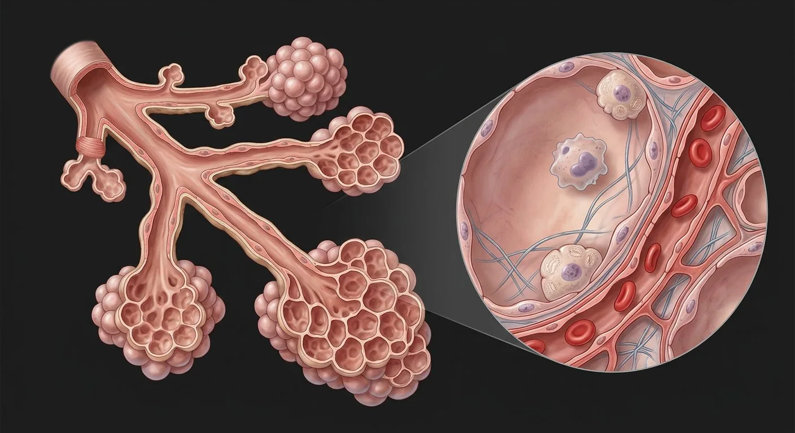

ORGAN → UNDER THE LENS
Alveolar cell lining
Tap to compare the organ region with a tissue-level teaching illustration.
Read about Type I pneumocyte ↓From terminal bronchiole to alveolar sac, type I/II pneumocytes, macrophages and the air–blood barrier.

A terminal bronchiole is the last purely conducting airway. Its distal respiratory bronchioles bear occasional alveoli and lead to alveolar ducts, sacs and alveoli. Thin type I pneumocytes cover most air-exchange surface; type II cells secrete surfactant and can contribute to epithelial repair. The air–blood barrier includes alveolar epithelium, thin interstitium/fused basement membranes and capillary endothelium. Alveolar macrophages provide immune surveillance; capillary red cells pass closely alongside exchange surfaces.
These are educational cutaways, not literal magnifications of an organ pixel or laboratory slides. A ring marks the approximate tissue region; part-specific lines appear only where identifiable.
Tap to compare the organ region with a tissue-level teaching illustration.
Read about Type I pneumocyte ↓These 17 structures describe anatomy related to the chapter’s regional illustration. Each entry separates location, function and a clinical point.
Final nonalveolated conducting airway before respiratory zone.
What it doesDelivers air to downstream acinus.
Clinical connectionContains no cartilage plates or submucosal glands.
First airway segment with alveoli interrupting its wall.
What it doesCombines air conduction and some gas exchange.
Clinical connectionMarks proximal boundary of acinus.
Distal passage whose walls are largely alveolar openings.
What it doesDistributes air to multiple alveolar sacs.
Clinical connectionMore extensively alveolated than respiratory bronchiole.
Common terminal chamber opening into a cluster of alveoli.
What it doesShares airflow among terminal alveoli.
Clinical connectionNot synonymous with a single alveolus.
Tiny airspace lined by specialized epithelium and surrounded by capillaries.
What it doesProvides extensive diffusion surface.
Clinical connectionDestruction reduces gas-exchange area.
Very thin squamous alveolar epithelial cell covering most alveolar surface.
What it doesMinimizes gas diffusion distance.
Clinical connectionDamage can impair barrier integrity.
Cuboidal cell with lamellar bodies, commonly at alveolar corners.
What it doesSecretes surfactant and contributes to epithelial renewal.
Clinical connectionImmature surfactant production contributes to neonatal respiratory distress.
Lipid/protein film at air–liquid interface.
What it doesReduces surface tension and supports alveolar stability.
Clinical connectionDeficiency increases collapse tendency.
Secretory granules in type II pneumocytes containing surfactant constituents.
What it doesPackage surfactant for release.
Clinical connectionVisible ultrastructurally, not as separate gross structures.
Resident/mobile phagocyte in alveolar airspaces.
What it doesRemoves particulates and participates in host defense.
Clinical connectionInflammation can recruit further macrophages.
Dense blood network embedded in thin alveolar septa.
What it doesBrings erythrocytes close to airspace.
Clinical connectionPulmonary emboli impair perfusion, not just ventilation.
Type I epithelium, basal lamina/interstitium and capillary endothelium in close apposition.
What it doesSupports O₂ and CO₂ diffusion.
Clinical connectionEdema or fibrosis thickens effective diffusion path.
Shared wall between alveoli containing capillaries and elastic/collagen support.
What it doesSupports recoil and perfusion.
Clinical connectionSeptal destruction characterizes emphysematous loss.
Elastic connective network surrounding distal airspaces.
What it doesSupports passive recoil.
Clinical connectionLoss increases compliance but reduces recoil.
Small openings between some neighboring alveoli.
What it doesAllow collateral gas passage.
Clinical connectionCan also permit spread of inflammatory material.
Deoxygenated-blood inflow accompanies bronchiolar branches.
What it doesFeeds alveolar capillaries.
Clinical connectionUnlike systemic arteries, carries low-oxygen blood here.
Collects oxygenated capillary blood toward pulmonary veins.
What it doesReturns blood to left atrium.
Clinical connectionOften courses in septal planes apart from bronchiole.
These 3 additional entries give anatomical context. They are deliberately not assigned a photographic pin on the regional image.
Elastic fibers and small smooth-muscle elements border some alveolar openings along ducts.
What it doesHelps maintain geometry of distal airways.
Clinical connectionLoss of elastic support promotes airspace enlargement.
Sealing contacts between adjacent alveolar epithelial cells.
What it doesMaintain fluid barrier despite thin gas-exchange surface.
Clinical connectionBarrier failure contributes to alveolar edema.
Thin connective compartment between epithelium and capillary endothelium.
What it doesSupports cells, matrix and diffusion interface.
Clinical connectionFibrosis thickens gas-exchange barrier.
Short answers grounded in the structures described above. Use the illustrated guide for anatomical context.
An acinus is the lung region distal to a terminal bronchiole where respiratory bronchioles, alveolar ducts and alveoli participate in gas exchange. It is a microanatomical unit, not a whole lung lobe.
Type I pneumocytes are thin squamous lining cells specialized for gas exchange. Type II pneumocytes are plumper cells that make surfactant and help replenish the alveolar lining.
It is the thin interface separating air in an alveolus from blood in a nearby capillary, involving alveolar epithelium, shared basement membranes and capillary endothelium. Its short diffusion distance supports gas exchange.
Alveolar macrophages can move on the air-facing surface of alveoli and engulf inhaled particles and debris. They are not the same as Type I or Type II epithelial cells.
No. The separate alveolar cell view is a digital teaching illustration. The thin lining and plumper Type II cell are depicted for learning, not presented as a clinical slide or a literal lung-image zoom.
Follow these connected structures and body systems in the illustrated atlas.
 LungsTwo elastic, pleura-lined organs where air and blood come within 0.5 µm of each other.↗
LungsTwo elastic, pleura-lined organs where air and blood come within 0.5 µm of each other.↗ Vascular systemTwo trees from one pump: arteries deliver under pressure, veins return against gravity — with valves, shunts and plexuses throughout.↗
Vascular systemTwo trees from one pump: arteries deliver under pressure, veins return against gravity — with valves, shunts and plexuses throughout.↗ HeartA four-chambered muscular pump with four valves and its own electrical conduction system.↗
HeartA four-chambered muscular pump with four valves and its own electrical conduction system.↗General anatomy references and related source chapters for continued study. These links do not make the digital illustrations clinical images or certify every anatomical variant.
This educational page is not medical advice and has not undergone formal clinical peer review. Spotted an error? Contact the editor.
Open the realistic interactive plate, label lines, focus view and self-test.